Peter Paul Rubens
Venus in Front of
the Mirror
The Garden Palace in Vienna’s present-day Rossau district was constructed during the reign of Prince Johann Adam Andreas I of Liechtenstein (1657-1712), who was one of the greatest builders of his day. The perfect baroque cosmos created by Prince Johann Adam Andreas I underwent extensive changes at the end of the 18th and the beginning of the 19th century.
|
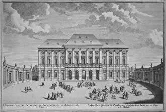 |
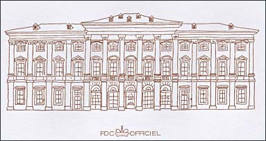 |
The Second World War and its immediate aftermath sparked radical changes for the
palace. In 1939, the princely family took up residence in Vaduz and also moved
its art treasures there, an undertaking that was completed by 1948. Vienna was
thus no longer a location for the Princely Collections, and a new use had to be
found for the palace.
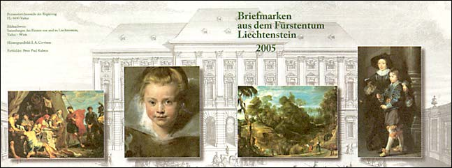
The thorough renovation of the Garden Palace, begun in 2001 and by now largely completed, was conceived from the outset with the return of a significant portion of the Princely Collections from Vaduz in mind. With the opening of the LIECHTENSTEIN MUSEUM on 28 March 2004, a long-held dream of the Princely Family became a reality. The about View of Liechtenstein Garden Palace, c. 1730, is the work of the artist Salomon Kleiner (1703–1761).(Source)
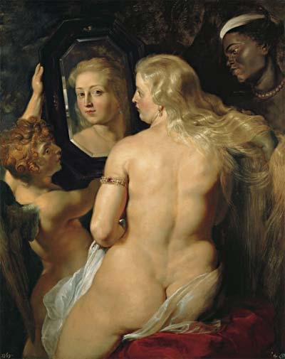
On the occasion of the opening of the
Liechtenstein Museum in Vienna, Austria and Liechtenstein released a joint stamp
issue to mark the new artistic attraction of Austria's capital. See above a
reproduction of the chosen work for the stamp, a painting by Rubens, "Venus in Front of the Mirror", c. 1613/1614.
It is displayed in the Liechtenstein Museum in Vienna, formerly the
Liechtenstein Garden Palace.
Some technical data:
Oil on panel,
height 123 cm, width 98 cm,
Inv.-No. GE120.
The painting was presumably acquired by Prince Johann Adam Andreas I von
Liechtenstein from the art dealer Peter van Hecke in Antwerp.
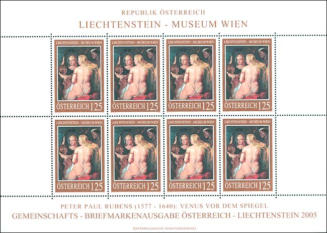
Art and art treasures have been and are a passion of the Princes of Liechtenstein, and of the reigning prince Hans-Adam II too. The history of the Princely Art Collection began over 400 years ago. Over the years each prince has put his own individual stamp on the Collections. A valuable art showcase has evolved, albeit one which threatened to disintegrate during the Third Reich and the World War II. Many works had to be sold or went missing in some other way, leaving distressing gaps.
|
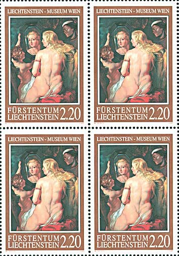 |
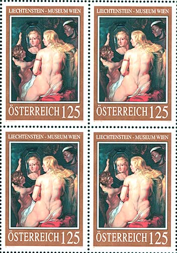 |
It now fell to Prince Hans-Adam II to refill those gaps as well as possible. The product of painstaking endeavor is here to be seen: a historically significant Baroque integrated artwork, capable of offering a range of different emotions has been created. The centerpiece if formed by the works of Peter Paul Rubens.
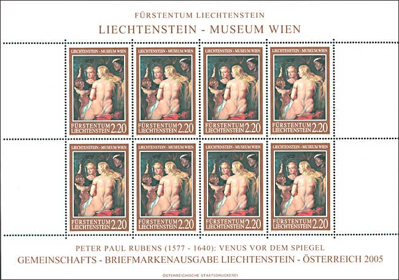
Peter Paul Rubens presented his Venus in Front of the Mirror as the ultimate symbol of beauty. She is aware of the viewer in a mirror that frames her face like a portrait. Great play is made of the sensual reproduction of her skin and silky hair, which is further enlivened by the contrast with the dark-skinned maidservant. The few costly accessories, otherwise decorative additions to elaborate clothing, emphasize the figure’s nakedness.
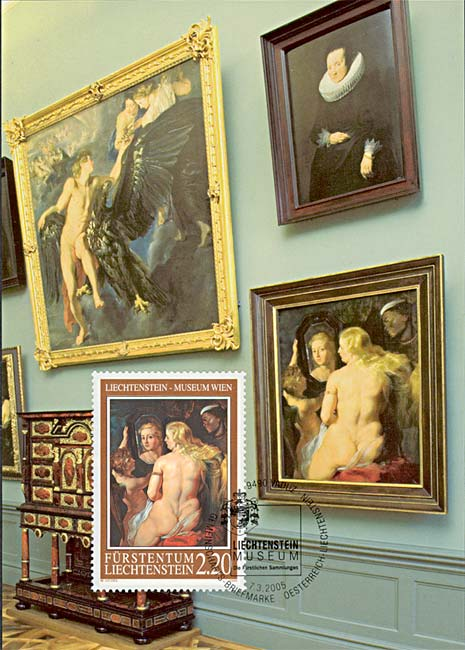
The sensual qualities of the painting are created by Rubens’s subtle painterly approach. He alternates sketchy brushstrokes, drawn over the ground like a transparent veil, with compact areas, painted in great detail. One particularly attractive feature of the picture is the contrast between the goddess’s encounter with the viewer, which seems to occur almost by chance, and the representation of her beauty, as if conceived for a spectator.
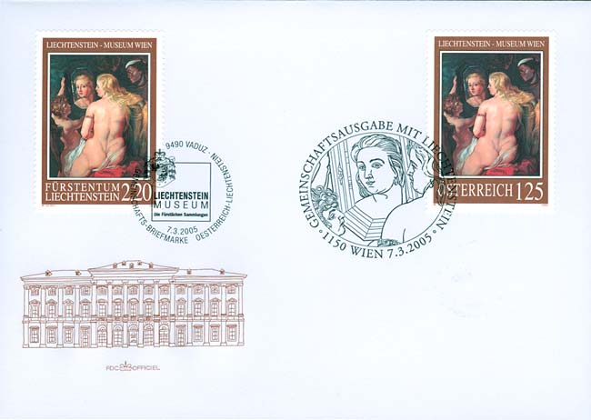
The mirror that Cupid holds up for the goddess reveals an additional level of meaning: the reflection of Venus, which reveals her beauty to the viewer, becomes a symbol of painting that competes with nature to produce an image that is as real as possible. Rubens modeled his work on compositions by Titian and Veronese that combine Venus and a mirror, and probably also offered this possible interpretation.
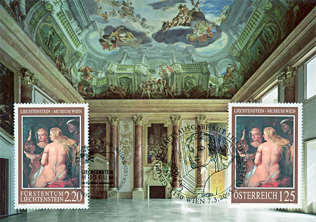
With the virtuosity unique to him, Peter Paul Rubens has expressed the essence of Venus -- in the body turned to one side, the gaze directed at the viewer, the expression one of comeliness and charm, and not least in the services of her attendants. All in all: looking and being seen, casting or catching covert glances -- Peter Paul Rubens' understanding of the glancing game is mastery.
And ever-present in his idiosyncratic pictorial language is the youthfulness factor -- a favorite element in Baroque art.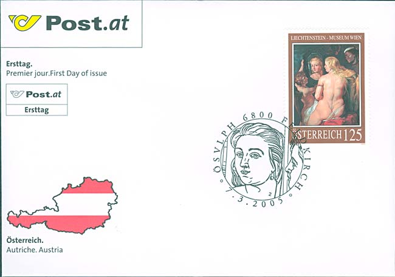
The joint issue Liechtenstein - Austria, presented above, was released simultaneously in both countries on the 3rd of March 2005. It has been agreed that further joint stamps on the Liechtenstein Museum theme will be issued in the next few years, which is good news for all art on stamps collectors. Prof. Wolfgang Seidel from St. Martin am Wöllmissberg has designed the stamp and has done full justice to Rubens' artistic mastery in his steel engraving reproduction. (Source: Briefmarken aus dem Fürstentum Liechtenstein, 7. März 2005).
All in all, a great release of both postal administrations, and a must for any art on stamps collector. Such a pity that the scans cannot reproduce the unique reflections of an engraved stamp. For those who wish to see them in their full splendor there is only one solution...
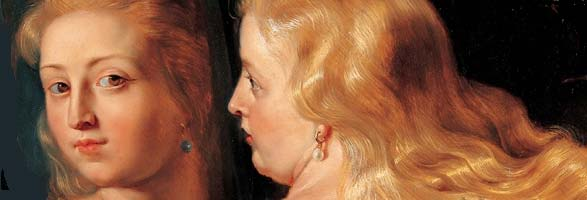
Thanks to a great master, the past 400 years haven't left traces on your beautiful face, that looks at us with the same inquiring, and in the same time inviting eyes. We will never know your real name, so farewell goddess Venus, the one with golden curls!
|
Click the above image to visit the site |